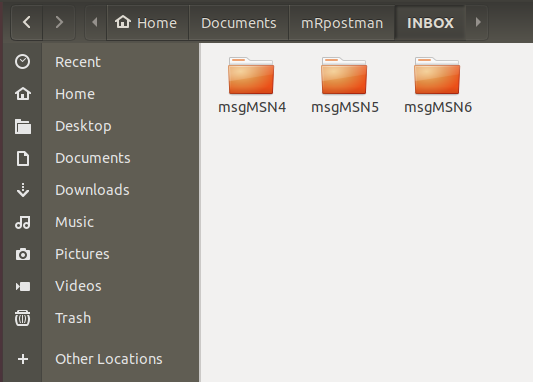
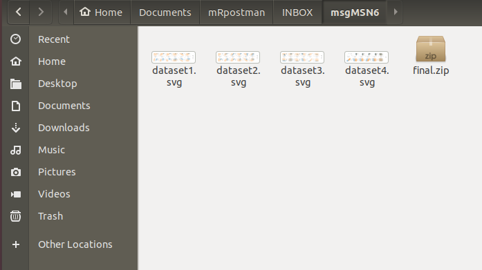

basics.RmdmRpostman makes extensive use of ‘curl’ and ‘libcurl’ capabilities, providing functions for mailboxes and electronic messages manipulation. Beyond many other functionalities, it is possible to move, delete, search and fetch messages or its parts using specific criteria.
In this vignette, we present all available functions of this package, but not all the possibilities one can explore.
Before using mRpostman, it is essential to configure your mail account. Many mail providers today require authorizing “less secure apps” to access your account from a third part app.
See README.md for more details on Allowing Less Secure Apps Access.
The package is divided in 8 groups of functions:
configure_imap();list_mailboxes(), select_mailbox(), examine_mailbox(), rename_mailbox();
list_server_capabilities(),flag_options(), section_or_field_options(), metadata_options();search_before(), search_since(), search_period(), search_on(), search_sent_before(),search_sent_since(), search_sent_period(), search_sent_on(), search_string(), search_flag(), search_smaller_than(), search_larger_than(), search_younger_than(), search_older_than();custom_search();
AND(), OR();before(), since(), on(), sent_before(), sent_since(), sent_on(), string(), flag(), smaller_than(), larger_than(), younger_than(), older_than();fetch_full_msg(), fetch_msg_header(), fetch_msg_text(), fetch_msg_metadata();list_attachments(), get_attachments();copy_msg(), get_min_id(), get_max_id(), delete_msg(), expunge(), add_flags(), remove_flags(), replace_flags(), move_msg().After enabling (if needed) “Non secure apps access” in your Mail provider, you have to configure your IMAP settings:
library(mRpostman)
# IMAP settings
# Gmail
imapconf <- configure_imap(url="imaps://imap.gmail.com",
username="your_user",
password=rstudioapi::askForPassword()
)
# Yahoo Mail
# imapconf <- configure_imap(url="imaps://imap.mail.yahoo.com/",
# username="your_user",
# password=rstudioapi::askForPassword()
# )
# AOL Mail
# imapconf <- configure_imap(url="imaps://export.imap.aol.com/",
# username="your_user",
# password=rstudioapi::askForPassword()
# )
# Yandex Mail
# imapconf <- configure_imap(url="imaps://imap.yandex.com",
# username="your_user",
# password=rstudioapi::askForPassword()
# )
# Outlook - Office 365
# imapconf <- configure_imap(url="imaps://outlook.office365.com",
# username="your_user",
# password=rstudioapi::askForPassword()
# )
# you can try another IMAP server and see if it worksAnother useful options are: timeout_ms, verbose = TRUE, buffersize and fresh_connect = TRUE. Further ‘curl’ options related to IMAP functionalities can be passed to configure_imap(). See curl::curl_options().
Before executing search and fetch commands, it is recommended to check which are your options regarding to flags, message’s section and fields, and you server capabilities as well.
Knowing you server capabilities is important when searching because you can execute an optimized search using “ESEARCH” extension. Also, if your server has the “WITHIN” extension, you can use search_younger_than() and search_older_than() functions.
If your server provides “MOVE” capabilities, you can use move_msg() for moving messages between two mailboxes.
Note that Gmail does not provide the “WITHIN” extension.
To see which section and/or fields of a message you can specify in some searches or when fetching a message, use:
All search functions will return a list with an imapconf object and a “msg_id” vector containing the results from search. The first object will be important when you want to put all the commands in a chain and perform a fetch after searching for messages. In this case, you will need the IMAP configuration object (imapconf) and the message’s ids (msg_id).
If you do not want to return the imapconf object, but only the search results, you can set return_imapconf = FALSE in any of the search functions.
You can also NEGATE all search expressions by setting negate = TRUE.
If your server supports ESEARCH, use it. It will prevent your results from being stripped. With “ESEARCH”, the results will be condensed to groups of sequence similar to what R does. For instance, if your search returns 1000 results, it is better having condensed groups such as 1:10, 12, 23:27, ... instead of a sequence of 1, 2, 3, 4, 5, 6, ..., 10, 12, 23, 24, 25, .... If you can’t use ESEARCH, or if your results are being stripped even with ESEARCH, you can try to increase your buffersize in configure_imap() in order to avoid stripping. This is related to curl’s buffersize.
search_before(), search_since(), search_on(), and search_period() use internal date, which reflects the moment when the message was received. search_sent_before(), search_sent_since(), search_sent_on(), and search_sent_period() use RFC-2822 date header (origination date), which “specifies the date and time at which the creator of the message indicated that the message was complete and ready to enter the mail delivery system” (Resnick, 2008). Dates in both methods must be the same most of time. Nonetheless, using internal date for search is faster (Babcock, 2016).
result <- imapconf %>%
select_mailbox(mbox = "CRAN messages2") %>%
search_before(date_char = "17-Apr-2019", esearch = TRUE)
result$msg_idYou can use UID (unique identifier) instead of MSN (message sequence number) and a flag also.
result <- imapconf %>%
select_mailbox(mbox = "Kansas State University") %>%
search_before(date_char = "02-May-2019",
by = "UID",
flag = "UNANSWERED",
esearch = TRUE)
result$msg_idRemember, if you do not want to return the imapconf object, but only the search results, you can set return_imapconf = FALSE in any of the search functions.
result <- imapconf %>%
select_mailbox(mbox = "Kansas State University") %>%
search_before(date_char = "02-May-2019",
by = "UID",
flag = "UNANSWERED",
esearch = TRUE, return_imapconf = FALSE)
resultYou can also NEGATE the statement to search for messages NOT BEFORE a date:
results <- imapconf %>%
select_mailbox(mbox = "CRAN messages2") %>%
search_period(since_date_char = "02-Jan-2019",
before_date_char = "30-Jun-2019",
flag = "ANSWERED",
esearch = TRUE)You can NEGATE period searches too:
results <- imapconf %>%
select_mailbox(mbox = "CRAN messages2") %>%
search_sent_before(date_char = "17-Apr-2019")
results$msg_idYou can use UID (unique identifier) instead of MSN (message sequence number) and a flag also.
results <- imapconf %>%
select_mailbox(mbox = "Kansas State University") %>%
search_sent_before(date_char = "02-Jan-2019",
by = "UID",
flag = "UNANSWERED",
esearch = TRUE)You can also NEGATE the statement to search for messages NOT SENTBEFORE a date:
You can search for a simple or compound string either in the whole message, in a section, or in a specific header field. You can also NEGATE the statement and search for messages (or specific part of a message) not containing that string.
When searching by string, it is not possible to use flags.
Searching “TO” field:
results <- imapconf %>%
select_mailbox(mbox = "CRAN messages2") %>%
search_string(section_or_field = "TO", string = "hadley@rstudio.com",
negate = TRUE) # not TO "hadley@rstudio.com"
results$msg_idSearching “TEXT” section.
results <- imapconf %>%
select_mailbox(mbox = "Kansas State University") %>%
search_string(section_or_field = "TEXT", string = "Dear Allan")To search for the string in the whole message, use section_or_field = "BODY".
results <- imapconf %>%
select_mailbox(mbox = "Kansas State University") %>%
search_string(section_or_field = "BODY", string = "Dear Allan")Check section_or_fields_options() to see which fields and sections you can specify.
Check flag_options() to see which flags you can specify.
custom_search() and its helper functions allow you to create a vast number of customized search by combining different criteria using all the types of searches presented before.
These are the helper functions you can use inside custom_search():
AND(), and OR();before(), since(), on(), sent_before(), sent_since(), sent_on(), string(), flag(), smaller_than(), larger_than(), younger_than(), and older_than().NOTE: IMAP queries follows Polish notation, i.e. operators such as OR come before arguments, e.g. “OR argument1 argument2”. Therefore, the relational operators functions in this package should be used like the following examples: OR(before("17-Apr-2015"), string("FROM", "Jim")). Even though there is no “AND” operator in IMAP, this package adds a helper funcion AND() to indicate multiples arguments that must be searched together, e.g. AND(since("01-Jul-2018"), larger_than(16000)).
Example 1: Searching for messages containing the string “toronto” in the “FROM” field AND that were received before “12-Apr-2019”.
results <- imapconf %>%
select_mailbox(mbox = "INBOX") %>%
custom_search(custom_request =
AND(
string(section_or_field = "FROM", string = "Toronto"),
before(date_char = "12-Apr-2019")
)
)
results$msg_idExample 2: Searching for messages containing the string “Contract 2872827” in the “TEXT” section OR the string “Buying operation” in the “Subject” field of the “HEADER”.
You can fetch full messages, message headers, message texts, or only metadata field(s) of messages.
We usually fetch messages after a search. Given the output of search functions in mRpostman, you will have to use the exposition pipe %$% in order to retrieve and correctly map the imapconf object and the msg_id (search results).
You can also choose to write fetch results to disk (working directory) using write_to_file = TRUE. If you choose to do so, mRpostman creates a folder with the mailbox name in your wd and save the parts of the messages you are fetching to text files using each message sequence number (MSN) or unique identifier (UID) as names.
results <- imapconf %>%
select_mailbox(mbox = "Kansas State University") %>%
search_before(date_char = "10-Mar-2019", by = "UID") %$% #exposition pipe operator
fetch_full_msg(imapconf = imapconf, msg_id = msg_id,
by="UID", write_to_file = TRUE, keep_in_mem = TRUE,
partial = "0.789")Do not forget to re-specify by = "UID" inside fetch_full_msg().
IMPORTANT: Some servers may require larger timeout_ms parameter inside configure_imap() in order to successfully fetch your messages. This is particularly important when your messages have large attachments, which can sensibly increase the fetching time.
results <- imapconf %>%
select_mailbox(mbox = "INBOX") %>%
search_on(date_char = "10-may-2019", by = "UID") %$% #exposition pipe operator
fetch_msg_metadata(imapconf, msg_id = msg_id, by = "UID",
metadata = c("INTERNALDATE", "UID", "ENVELOPE"))You can check metadata options with metadata_options().
After fetching full messages, it is possible to list and get the attachments of those messages.
fetch_full_msg() will return a list with the full message content, i.e. header, text, and attachments. You can access this content and list or get/save the attachments from each message with the following functions.
IMPORTANT: you cannot set keep_in_mem = FALSE in fetch_full_msg() if you intend to list or get attachments after fetching your messages.
get_attachments() will try to convert base64 text inside your message to the appropriate file extension. This will create a folder with the selected mailbox in your working directory. Inside it, you will have other folders with the respective message sequence number (MSN) or unique id (UID), e.g.: msgMSN8 or msgUID8, and the attachment(s) inside it.
imapconf %>%
select_mailbox(mbox = "INBOX") %>%
search_since(date_char = "23-Sep-2019") %$%
fetch_full_msg(imapconf, msg_id=msg_id, write_to_disk = TRUE) %>%
get_attachments()The result will be like this:


Here we present other functions to perform useful IMAP operations.
results <- imapconf %>%
select_mailbox(mbox = "[Gmail]/Trash") %>%
search_before(date_char = "10-may-2012", by = "UID") %$% #exposition pipe operator
delete_msg(imapconf = imapconf, msg_id = msg_id)Deleting a specific “msg_id” without a previous search:
Expunges message(s) marked with the “DELETED” flag in a mailbox or a specific message using the specific_UID attribute.
Adding, removing and replacing one or more flags to messages.
results <- imapconf %>%
select_mailbox(mbox = "INBOX") %>%
search_since(date_char = "18-Aug-2019", by = "UID") %$% #exposition pipe operator
add_flags(imapconf = imapconf, msg_id = msg_id, flags_to_set = "RECENT")You cannot add a flag that is the antonym of an already existent flag in the message, e.g. cannot add “UNSEEN” flag when a message already has flag “SEEN”. Use replace_flags() instead.
move_msg() uses IMAP “MOVE” EXTENSION. Check if your server supports “MOVE” capability with list_server_capabilities().
# copy search results from "Sent" to "INBOX"
results <- imapconf %>%
select_mailbox(mbox = "[Gmail]/Sent Mail") %>%
search_before(date_char = "10-may-2012") %$% #exposition pipe operator
move_msg(imapconf = imapconf, msg_id = msg_id, to_mbox = "CRAN messages2")If your server does not provide “MOVE” capability, the same result can be achieved with a combination of add_flags() and expunge():
results <- imapconf %>%
select_mailbox(mbox = "[Gmail]/Sent Mail") %>%
search_before(date_char = "10-may-2012") %$% #exposition pipe operator
copy_msg(imapconf = imapconf, msg_id = msg_id, to_mbox = "CRAN messages2") %$%
add_flags(imapconf = imapconf, msg_id = msg_id, flags_to_set = "Deleted") %$%
expunge()Babcock, N., Introduction to IMAP, Blog, May 2016, https://nbsoftsolutions.com/blog/introduction-to-imap.
Crispin, M., INTERNET MESSAGE ACCESS PROTOCOL - VERSION 4rev1, RFC 3501, DOI: 10.17487/RFC3501, March 2003, https://www.rfc-editor.org/info/rfc3501.
Ooms, J. curl: A Modern and Flexible Web Client for R. R package version 3.3, 2019, https://CRAN.R-project.org/package=curl
Stenberg, D. Libcurl - The Multiprotocol File Transfer Library, https://curl.haxx.se/libcurl/
Freed, N. and N. Borenstein, Multipurpose Internet Mail Extensions (MIME) Part Two: Media Types, RFC 2046, DOI: 10.17487/RFC2046, November 1996, https://www.rfc-editor.org/info/rfc2046.
Resnick, P., Ed., Internet Message Format, RFC 2822, DOI: 10.17487/RFC2822, April 2001, https://www.rfc-editor.org/info/rfc2822.
Resnick, P., Ed., Internet Message Format, RFC 5322, DOI: 10.17487/RFC5322, October 2008, https://www.rfc-editor.org/info/rfc5322.